Species Index · 65 种
物种名录
按遇见概率从高到低排列，共 65 种。用上方的类群按钮或搜索框缩小范围。
极常见 12
常见 36
不常见 14
局部常见 2
罕见 1
-
 NO. 001
NO. 001
家燕
Hirundo rustica -
 NO. 002
NO. 002
树麻雀
Passer montanus -
 NO. 003
NO. 003
珠颈斑鸠
Spilopelia chinensis -
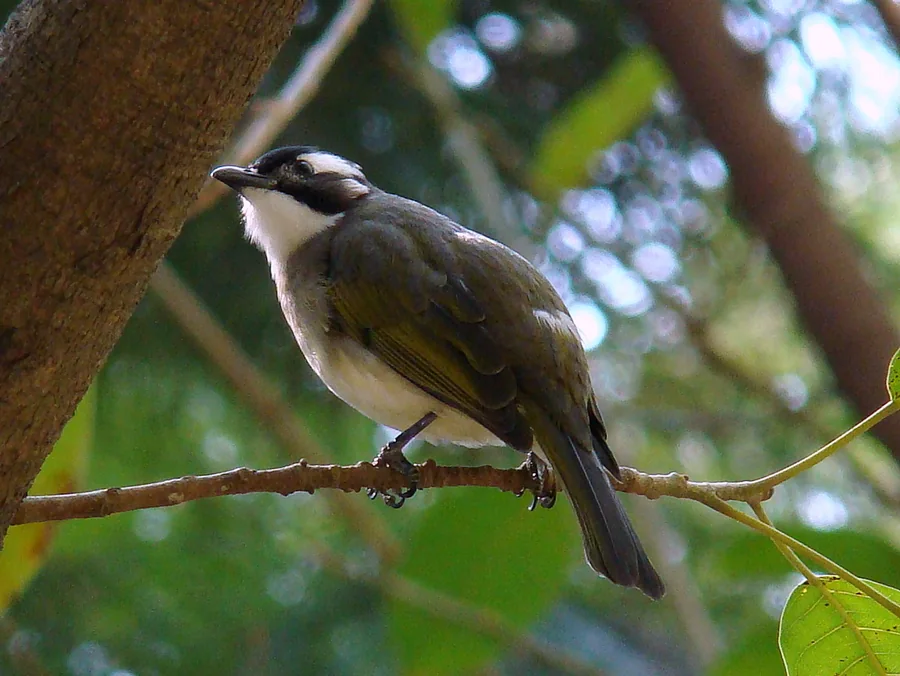
NO. 004白头鹎
Pycnonotus sinensis -
 NO. 005
NO. 005
白鹡鸰
Motacilla alba -
 NO. 006
NO. 006
纯色山鹪莺
Prinia inornata -
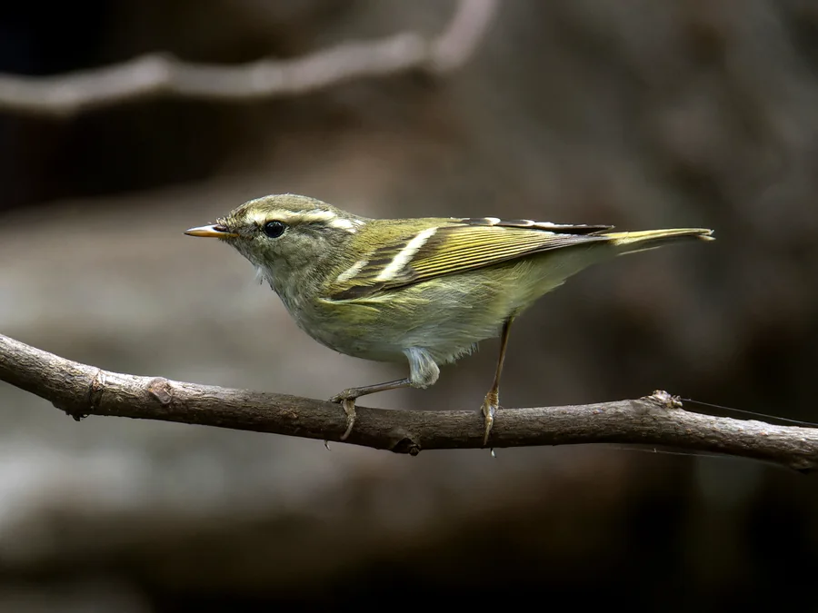
NO. 007黄眉柳莺
Phylloscopus inornatus -
 NO. 008
NO. 008
池鹭
Ardeola bacchus -
 NO. 009
NO. 009
白鹭
Egretta garzetta -
 NO. 010
NO. 010
黑水鸡
Gallinula chloropus -
 NO. 011
NO. 011
红嘴鸥
Chroicocephalus ridibundus -
 NO. 012
NO. 012
黑腹滨鹬
Calidris alpina -
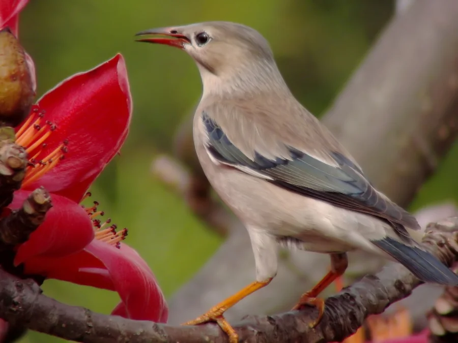
NO. 013丝光椋鸟
Spodiopsar sericeus -
 NO. 014
NO. 014
乌鸫
Turdus mandarinus -
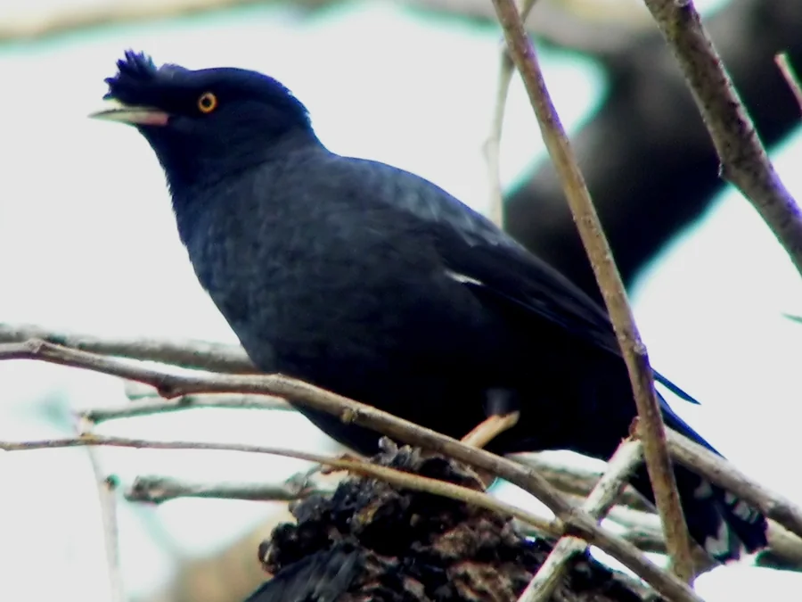
NO. 015八哥
Acridotheres cristatellus -
 NO. 016
NO. 016
北红尾鸲
Phoenicurus auroreus -
 NO. 017
NO. 017
噪鹃
Eudynamys scolopaceus -
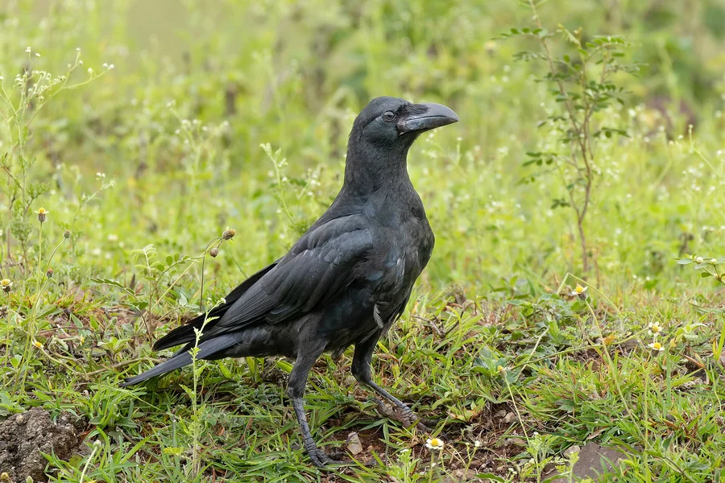
NO. 018大嘴乌鸦
Corvus macrorhynchos -
 NO. 019
NO. 019
小白腰雨燕
Apus nipalensis -
 NO. 020
NO. 020
斑文鸟
Lonchura punctulata -
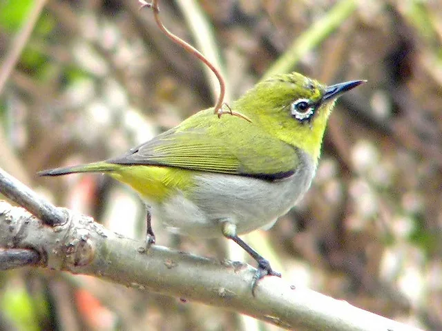
NO. 021暗绿绣眼鸟
Zosterops simplex -
 NO. 022
NO. 022
棕扇尾莺
Cisticola juncidis -
 NO. 023
NO. 023
棕背伯劳
Lanius schach -
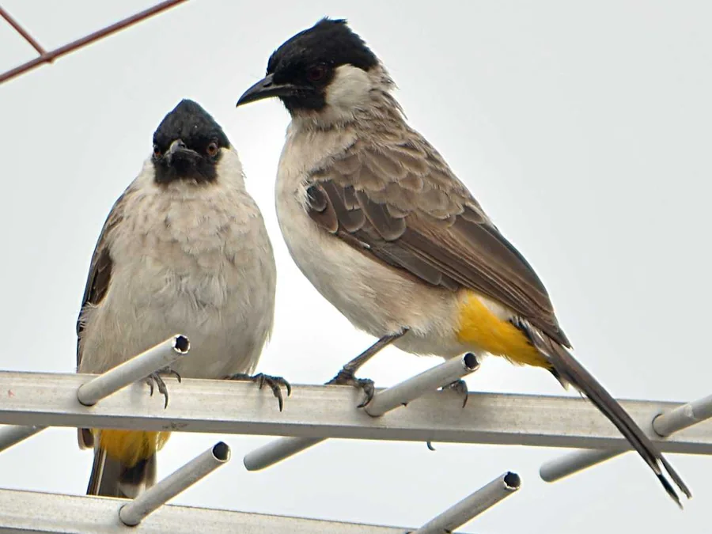
NO. 024白喉红臀鹎
Pycnonotus aurigaster -
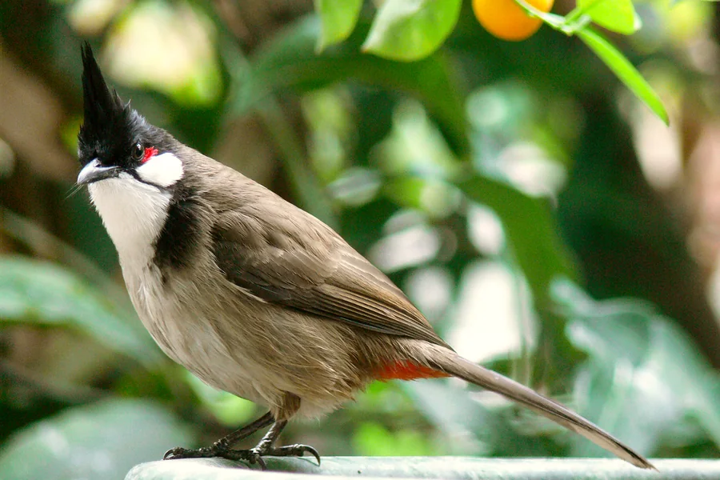
NO. 025红耳鹎
Pycnonotus jocosus -
 NO. 026
NO. 026
长尾缝叶莺
Orthotomus sutorius -
 NO. 027
NO. 027
黑卷尾
Dicrurus macrocercus -
 NO. 028
NO. 028
黑领椋鸟
Gracupica nigricollis -
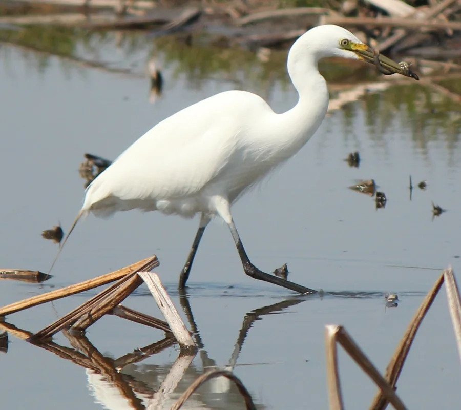
NO. 029中白鹭
Ardea intermedia -
 NO. 030
NO. 030
夜鹭
Nycticorax nycticorax -
 NO. 031
NO. 031
大白鹭
Ardea alba -
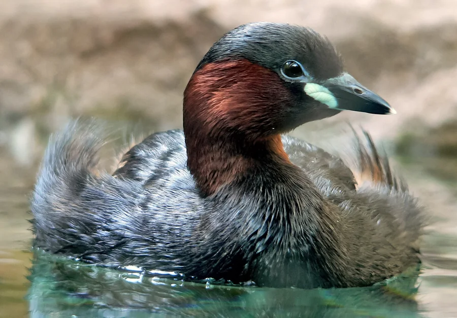
NO. 032小鸊鷉
Tachybaptus ruficollis -
 NO. 033
NO. 033
牛背鹭
Bubulcus ibis -
 NO. 034
NO. 034
白胸苦恶鸟
Amaurornis phoenicurus -
 NO. 035
NO. 035
白骨顶
Fulica atra -
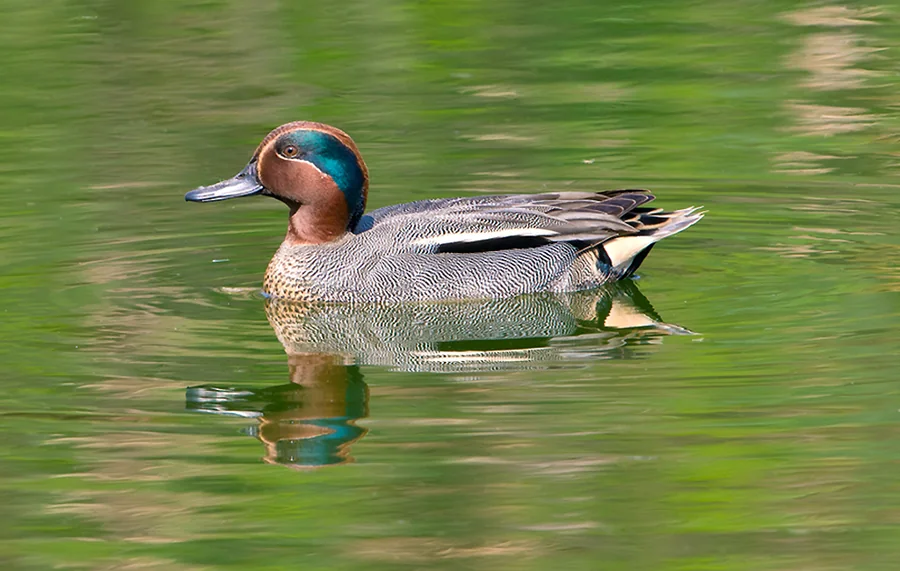
NO. 036绿翅鸭
Anas crecca -
 NO. 037
NO. 037
苍鹭
Ardea cinerea -
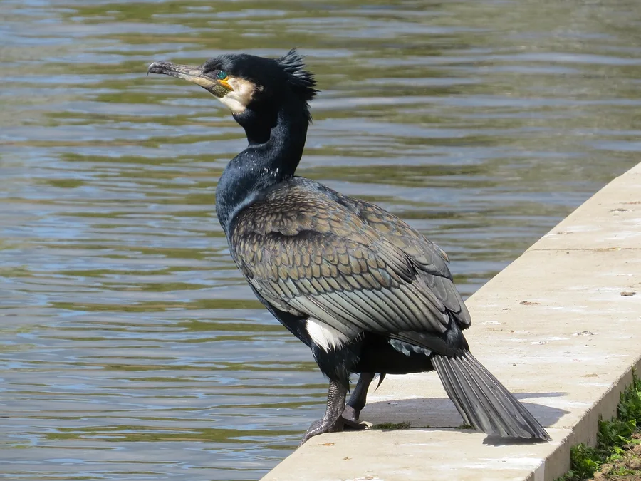
NO. 038普通鸬鹚
Phalacrocorax carbo -
 NO. 039
NO. 039
灰斑鸻
Pluvialis squatarola -
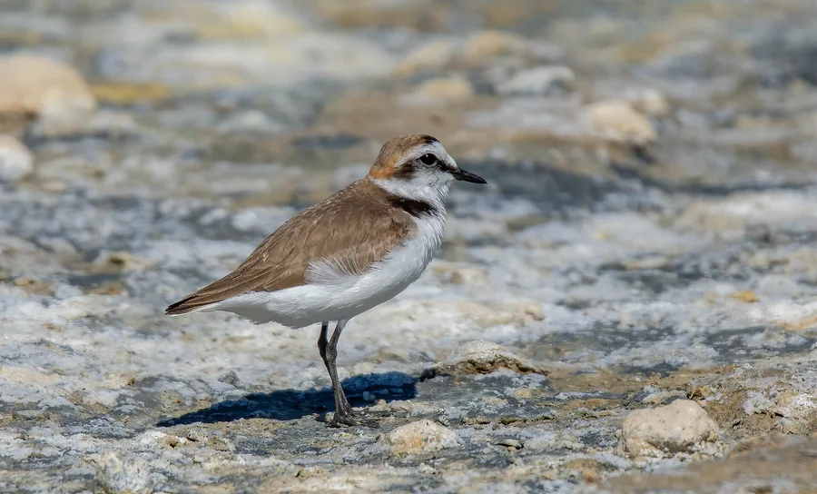
NO. 040环颈鸻
Charadrius alexandrinus -
 NO. 041
NO. 041
矶鹬
Actitis hypoleucos -
 NO. 042
NO. 042
青脚鹬
Tringa nebularia -
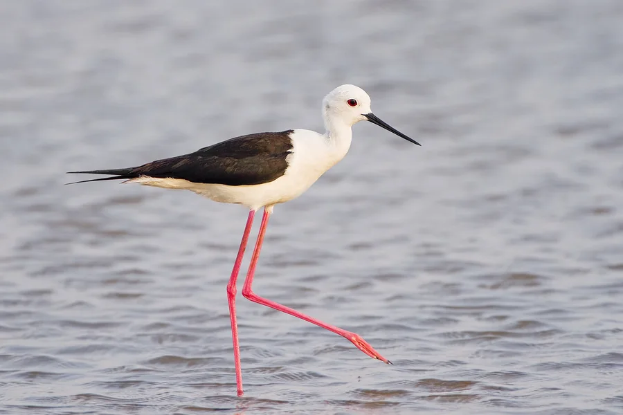
NO. 043黑翅长脚鹬
Himantopus himantopus -
 NO. 044
国家二级
NO. 044
国家二级 普通鵟
Buteo japonicus -
 NO. 045
国家二级
NO. 045
国家二级 红隼
Falco tinnunculus -
 NO. 046
国家二级
NO. 046
国家二级 黑鸢
Milvus migrans -
 NO. 047
NO. 047
普通翠鸟
Alcedo atthis -
 NO. 048
国家二级
NO. 048
国家二级 白胸翡翠
Halcyon smyrnensis -
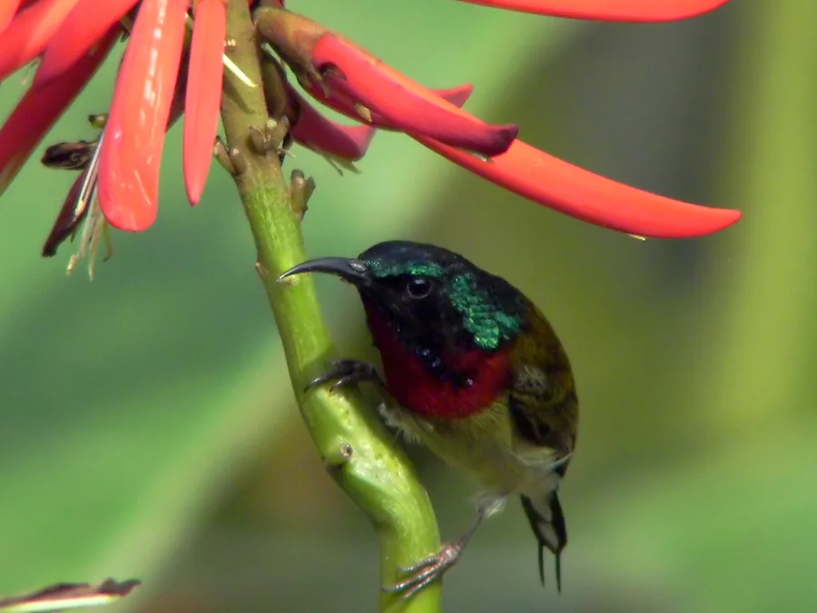
NO. 049叉尾太阳鸟
Aethopyga christinae -
 NO. 050
国家二级
NO. 050
国家二级 画眉
Garrulax canorus -
 NO. 051
国家二级
NO. 051
国家二级 褐翅鸦鹃
Centropus sinensis -
 NO. 052
NO. 052
黑喉噪鹛
Pterorhinus chinensis -
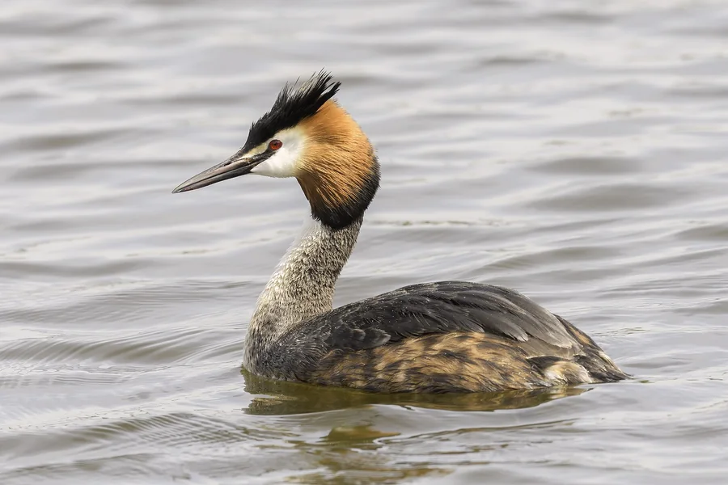
NO. 053凤头鸊鷉
Podiceps cristatus -
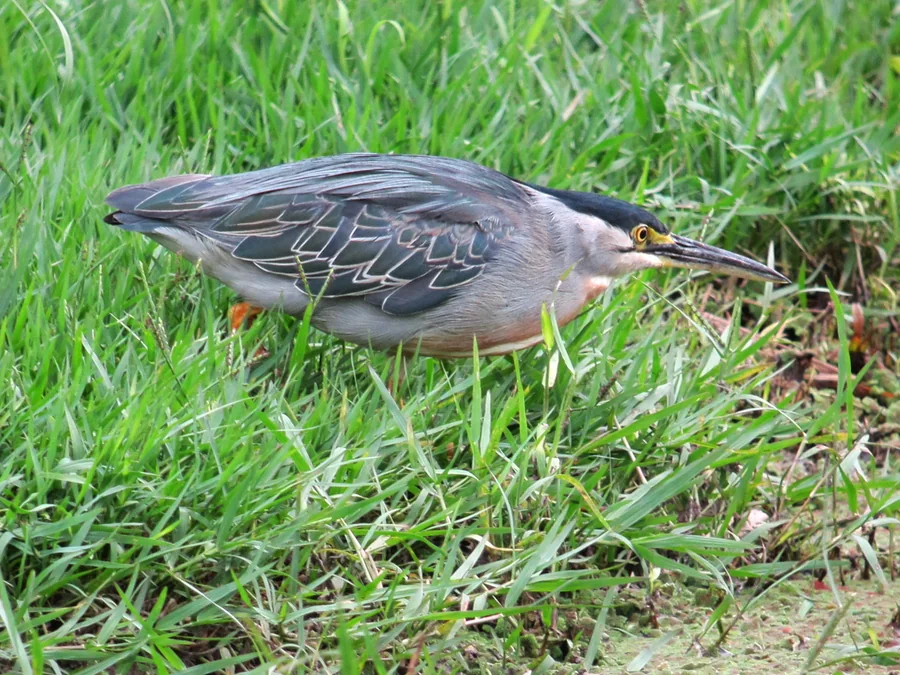
NO. 054绿鹭
Butorides striata -
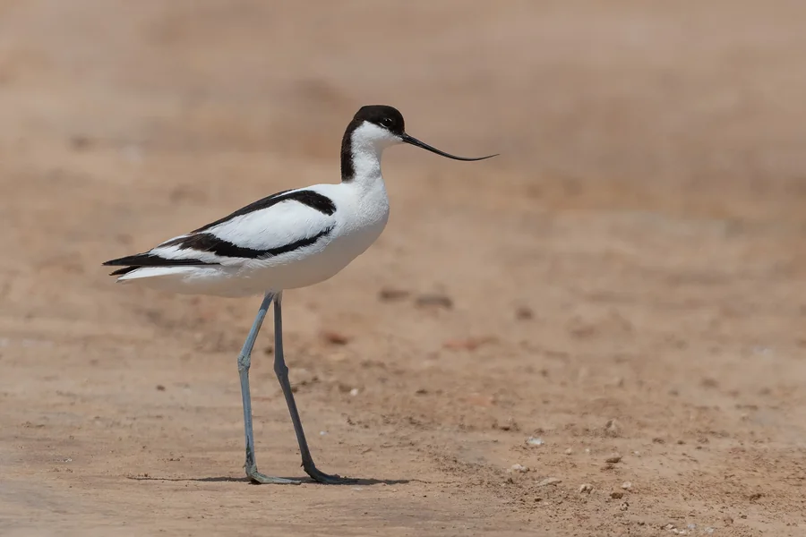
NO. 055反嘴鹬
Recurvirostra avosetta -
 NO. 056
国家二级
NO. 056
国家二级 白腰杓鹬
Numenius arquata -
 NO. 057
国家二级
NO. 057
国家二级 凤头鹰
Accipiter trivirgatus -
 NO. 058
国家二级
NO. 058
国家二级 蛇雕
Spilornis cheela -
 NO. 059
国家二级
NO. 059
国家二级 鹗
Pandion haliaetus -
 NO. 060
国家二级
NO. 060
国家二级 黑翅鸢
Elanus caeruleus -
 NO. 061
NO. 061
斑鱼狗
Ceryle rudis -
 NO. 062
国家二级
NO. 062
国家二级 蓝翡翠
Halcyon pileata -
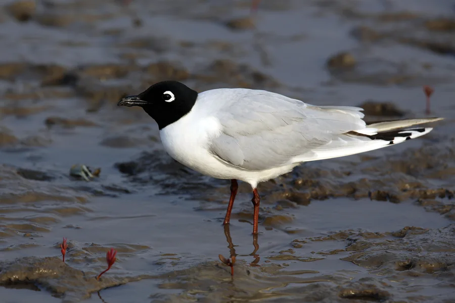
NO. 063 国家一级黑嘴鸥
Saundersilarus saundersi -
 NO. 064
国家一级
NO. 064
国家一级
黑脸琵鹭
Platalea minor -
 NO. 065
国家二级
NO. 065
国家二级 白琵鹭
Platalea leucorodia
没有匹配的物种，换个关键词试试。